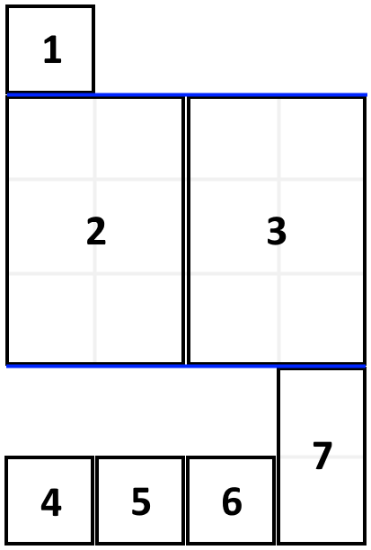

1105. 填充书架
DP：dp[i] = 前 i 本的最小总高度；枚举最后一层从第 j 本开始，宽度不超 shelfWidth，层高取段内最大。
思路
- 书必须按顺序摆，所以「最后一层放了哪些书」能划清子问题：
dp[i]只依赖更早的dp[j−1]。 - 内层从
j=i向左扩：累加厚度，一超shelfWidth就break（再往前必然更宽）。 - 转移
dp[i] = min(dp[j−1] + 段内最大高度)；塞得满不等于更优，最后一层可能只放一本。
图解
最优解
1import java.util.*;2 3class Solution {4 public int minHeightShelves(int[][] books, int shelfWidth) {5 int n = books.length;6 // dp[i]：前 i 本书的最小总高度7 int[] dp = new int[n + 1];8 Arrays.fill(dp, Integer.MAX_VALUE);9 dp[0] = 0;10 for (int i = 1; i <= n; i++) {11 // 枚举最后一层从第 j 本摆到第 i 本：w 层宽，h 层高12 int w = 0, h = 0;13 for (int j = i; j >= 1; j--) {14 w += books[j - 1][0];15 if (w > shelfWidth) break; // 第 j 本装不下，更前面的更装不下16 h = Math.max(h, books[j - 1][1]);17 dp[i] = Math.min(dp[i], dp[j - 1] + h);18 }19 }20 return dp[n];21 }22}题目
给定一个数组 books ，其中 books[i] = [thicknessi, heighti] 表示第 i 本书的厚度和高度。你也会得到一个整数 shelfWidth 。
按顺序 将这些书摆放到总宽度为 shelfWidth 的书架上。
先选几本书放在书架上（它们的厚度之和小于等于书架的宽度 shelfWidth ），然后再建一层书架。重复这个过程，直到把所有的书都放在书架上。
需要注意的是，在上述过程的每个步骤中，摆放书的顺序与给定图书数组 books 顺序相同。
- 例如，如果这里有 5 本书，那么可能的一种摆放情况是：第一和第二本书放在第一层书架上，第三本书放在第二层书架上，第四和第五本书放在最后一层书架上。
每一层所摆放的书的最大高度就是这一层书架的层高，书架整体的高度为各层高之和。
以这种方式布置书架，返回书架整体可能的最小高度。
示例 1：

输入：books = [[1,1],[2,3],[2,3],[1,1],[1,1],[1,1],[1,2]], shelfWidth = 4 输出：6 解释： 3 层书架的高度和为 1 + 3 + 2 = 6 。 第 2 本书不必放在第一层书架上。
示例 2:
输入: books = [[1,3],[2,4],[3,2]], shelfWidth = 6 输出: 4
提示：
1 <= books.length <= 10001 <= thicknessi <= shelfWidth <= 10001 <= heighti <= 1000
题面取自力扣当前版本。
数据快照 2026-11-04。题面版权归力扣所有，本站点仅供本人学习使用，请勿对外发布。